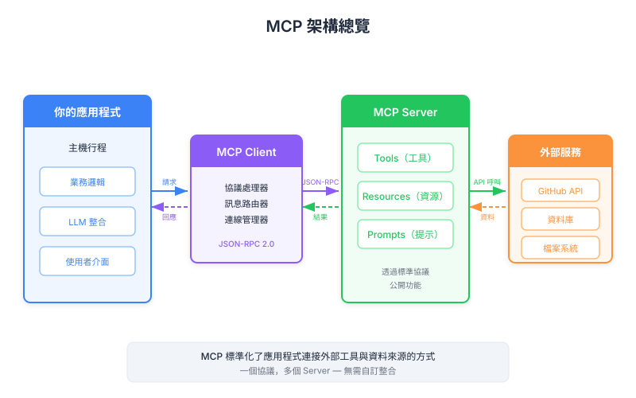

| Item | Detail |
|---|---|
| Exam Domain | D2 — Tool Design & MCP Integration (18%) |
| Task Statements | T2.1 设计与实现 tool schemas; T2.3 配置 MCP server 连接 |
| Source | introduction-to-model-context-protocol / 01-mcp-basics / Lesson 03 |
MCP 是一个标准化通信协议层，让 Claude 通过专用的 MCP server 访问外部工具与数据，不再需要手写集成代码。
Model Context Protocol (MCP) 是位于你的应用程序与外部服务之间的通信协议。与其为 Claude 需要访问的每个服务手写 tool schema 和 API 集成代码，MCP 把这个职责委派给专用的 MCP server。
核心架构遵循一个简单模式：
你的应用程序 (MCP Client)
|
v
MCP Server（例如 GitHub MCP Server）
|
v
外部服务（例如 GitHub API）
每个 MCP server 提供一个标准化接口，包含 tools、prompts 和 resources。你的应用程序只需要会说 MCP 协议——server 处理所有服务特定的细节。
Key Insight
MCP 之于 AI 工具集成，就像 USB 之于硬件外设。不再需要为每个设备准备专用接头，一个标准化协议就能搞定所有连接。
假设你在构建一个聊天界面，用户问 Claude 关于他们的 GitHub 数据。用户问："我所有 repo 中有哪些 open pull requests？"
没有 MCP 的话，你需要：
# 没有 MCP：你要自己写和维护这些
tools = [
{
"name": "get_pull_requests",
"description": "List open PRs across repositories",
"input_schema": {
"type": "object",
"properties": {
"state": {"type": "string", "enum": ["open", "closed", "all"]},
"repo": {"type": "string"}
}
}
},
# ... 几十个 tool 定义
]
def handle_get_pull_requests(state, repo):
# 认证、分页、错误处理...
response = requests.get(f"https://api.github.com/repos/{repo}/pulls",
params={"state": state},
headers={"Authorization": f"token {token}"})
# ... 更多代码
有了 MCP，GitHub MCP server 直接提供这一切。你的代码只需连上 MCP server 并传递 tool call。
Key Insight
真正要命的是维护负担。光是 GitHub 就有数百个 API endpoint。没有 MCP，每次 API 变更都可能破坏你的 tool 定义。MCP server 把维护工作集中化了。
MCP Client 就是你的应用程序——代表 Claude 连接 MCP server 的系统。它负责：
ListToolsRequest 发现可用的 toolsCallToolRequest 执行 toolsMCP Server 是一个独立进程，封装外部服务。它：
任何人都可以编写 MCP server。实际情况：
这是常见的考试主题。MCP 和 tool use 是互补的，不是相同的：
| 概念 | 它做什么 |
|---|---|
| Tool Use | Claude 决定调用 tool、格式化输入、处理结果的机制 |
| MCP | 提供 tool 定义和执行基础设施给 Claude 的协议 |
这样想：tool use 是动词（Claude 调用 tool），而 MCP 是名词（提供并执行那些 tools 的系统）。
没有 MCP 你仍然有 tool use——只是要自己写所有 tool 定义。没有 tool use，MCP server 就没用——因为 Claude 没有机制去调用它们。
Key Insight
CCA 考试中，不要把 MCP 和 tool use 混为一谈。MCP 是关于谁定义和维护 tools。Tool use 是关于 Claude 如何调用它们。它们一起工作但是不同概念。
本课直接对应 Domain 2: Tool Design & MCP Integration (18%)。重点考试角度：
| Front | Back |
|---|---|
| MCP 主要解决什么问题？ | 消除为 Claude 需要访问的每个外部服务手动编写、测试和维护 tool schemas 及集成代码的需求。 |
| MCP server 可以提供哪三种能力？ | Tools、prompts 和 resources。 |
| MCP 和 tool use 的关系是什么？ | 它们互补：MCP 提供 tool 定义和执行基础设施；tool use 是 Claude 调用那些 tools 的机制。 |
| 谁可以编写 MCP server？ | 任何人——服务提供者、社区贡献者，或构建自定义集成的个人开发者。 |
| MCP Client 的角色是什么？ | MCP Client 是你的应用程序，连接 MCP server、发现可用 tools、路由 tool 执行请求。 |
| 在 MCP 架构中，tool 执行实际发生在哪里？ | 在 MCP server 上，不是在你的应用程序 server 上。MCP server 处理所有服务特定的实现细节。 |
| 为什么 MCP 被比喻为 USB？ | 就像 USB 用一个协议标准化硬件连接，MCP 标准化 AI 工具集成，不需要为每个服务准备专用接头。 |
| 没有 MCP 的情况下，GitHub 集成你需要自己实现什么？ | 每个操作的 tool schema、API 调用的 handler 函数、认证处理、分页、速率限制，以及应对 API 变更的持续维护。 |